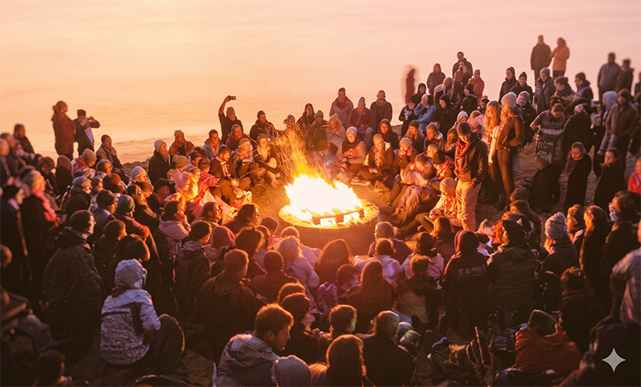
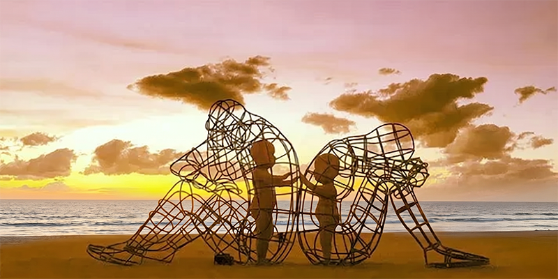

Consciousness Festival (pilot edition)
As a complement to the scientific program, CS 2026 will host a pilot edition of the Consciousness Festival—an informal gathering of experiential and creative activities running alongside the conference. This is an initial, developing program; its scope and schedule will evolve as the event takes shape.
Current Program

The festival program currently centers on informal, participatory activities that take advantage of the resort’s beachfront setting:
- Beachside music sessions — open, collaborative jam sessions on the beach
- Bonfires on the beach — evening gatherings for conversation and community
- Morning meditation — yoga and/or guided and silent sessions to start the day
- Art installations — visual art and interactive pieces, including works from Burning Man and other participatory art traditions
Participants are encouraged to bring musical instruments and contribute to a relaxed, collaborative atmosphere.
Expanding the Program
Additional events, performances, and activities may be added as resources and budget allow. The program will be updated on this page as it develops.
Call for Participation

We welcome proposals from individuals interested in organizing an activity or bring art pieces. If you would like to lead a session, performance, or experiential event, you are invited to propose it for inclusion in the program. We are also looking for volunteers willing to guide yoga, meditation, or other contemplative practices during morning sessions.
Proposals that require financial support should be discussed in advance so that feasibility can be assessed within the available budget.
To submit a proposal or for any inquiries, please contact: info@cs2026.org